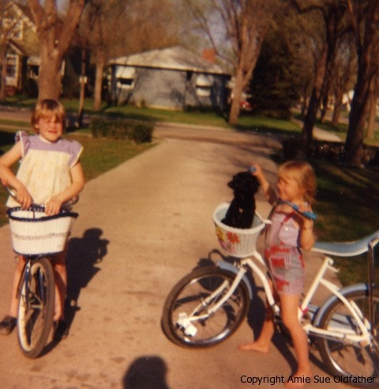
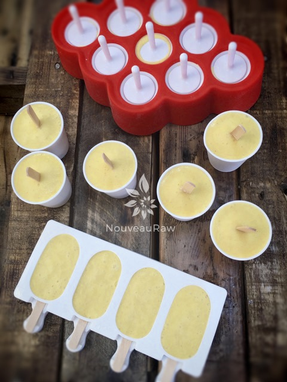
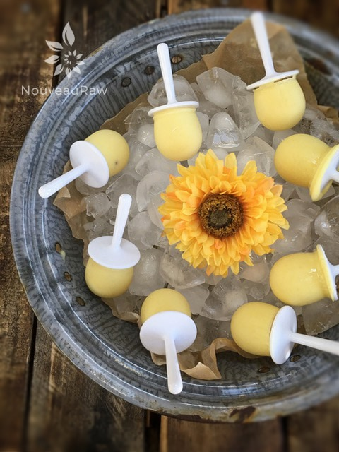
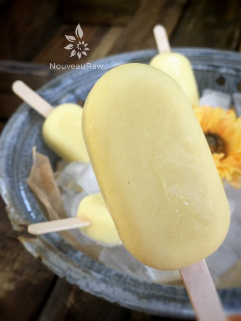

Pineapple Coconut Tropical Dixie Pops
~ raw, vegan, gluten-free, nut-free ~
Pineapple Coconut Tropical Dixie Pops … just the name is like a breath of fresh air. With the summer temperatures peaking, you will enjoy this cool and refreshing treat. Even if you find this recipe later in the winter months, it will be a well-received dessert.
I just love using 3 oz Dixie cups for my popsicle treats. They are a perfect size and are easy to grab and go for kids (and adults) who don’t have time to take a break from playing! :)
I remember making OJ (orange juice) popsicles every summer when I would visit my great grandparents. Do you remember those metal ice-cube trays that had a lever on the top that you use to break the ice cubes from the mold? Oy-vey, am I dating myself here?! Haha, Shoot, do ice-cube trays even exist at all these days, what with all the built-in ice-cube makers in freezers?
Anyway, back to Great Grama’s… we used to make a pitcher of orange juice and pour it into the metal ice-cube trays. After they had gone into the freezer, I had to patiently wait for them almost to set up so I could poke a toothpick into the center of each cube and then continue to let it freeze until hard. This was my job. One that I took very seriously.
I would push a dining room chair into the kitchen and snug it up against the fridge. Climb on the chair, open the freezer, and with a steady hand, I would poke a toothpick into the center of each cube.

Great Grama would try to hurry me along as I was cooling the house down by keeping the freezer door open so long, but I was not to be rushed! This was an extraordinary job and took great concentration. :)
Bless her heart for having so much patience with me. After they were frozen, we would pop them out and place them in a Ziplock baggie so we could make another batch. This way, we never ran out.
Grama’s kitchen was like a drive-through. Throughout the day, my girlfriend Bonita, and I would come in the house from playing… running in through the front door, without stopping, making our way through the kitchen where Great Grama would be standing with a popsicle in each hand. We would snatch them without breaking stride and beeline straight out the back door!
Playing was hard work, and there weren’t any “labor” laws to force us into taking scheduled breaks. Haha Ah, those memories are so precious to me. As I was getting lost in thought while writing this, I was inspired to look through my pictures to see if I could find a picture of Bonita and me. I don’t have many pictures of my childhood, they are far and few between. I was elated when I stumbled upon this one. Bonita is on the left side of the picture, and I am on the right. Believe it or not, but we are the same age. I was always a short little thing. Haha If memory serves me right, I finally “grew into” that bike around the age of 12. :)
Yields 3 cups ( I made 9 / 3 oz dixie cups worth )
- 1 1/2 cups young Thai coconut water
- 1 cup young Thai coconut meat
- 1 cup dried pineapple, chopped and reconstituted
- 1/4 cup chia seeds, ground to powder
- 1 tsp liquid stevia
Preparation:
- Young Thai coconut – I used 1 coconut for this recipe and it yielded the above quantities.
- If you are not able to find young Thai coconuts, you can use canned. Use the complete can. It will have a thick creamy layer and a layer of liquid, which is normal. Use the full-fat kind, not reduced fat.
- Chia seeds – grind to a fine powder in a coffee or spice grinder.
- Pineapple – You can use fresh or dried pineapple for this recipe. I only had dried on hand, so I used that.
- If using dried, place 1 cup worth in a bowl and add just enough hot water to cover the pineapple.
- Set this aside for about 10-15 minutes, long enough to soften it for blending purposes.
- Coconut ready? Ground chia ready? Pineapple ready? Good – now combine all of the ingredients into the blender and process until nice and creamy. It won’t get silky smooth, but it should be free of lumps, of course, unless you like lumps.
- Taste test! You can adjust the sweetness.
- The ripeness of the pineapple will vary so keep that in mind.
- Place your choice of popsicle molds on the counter and pour the batter into each one.
- Place a popsicle stick into the center of each one. Place the popsicles into a sealed container and place them in the freezer.
- Should keep well sealed in the freezer for 1 month before the flavor is affected.
Freezing Suggestions for Ice Cream:
-
Freeze in popsicle molds or 3 oz Dixie cups with a popsicle stick inserted.
-
-
Store the ice cream in the very back of the freezer, as far away from the door as possible. Every time you open your freezer door you let in warm air. Keeping ice cream way in the back and storing it beneath other frozen-sold items will help protect it from those steamy incursions.
-
Wish to make your own raw ice cream, wonder what machine I might recommend, and more? Click (
here) to check out the Reference Library!



© AmieSue.com